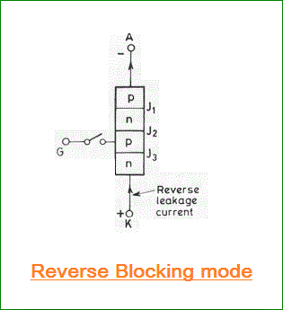
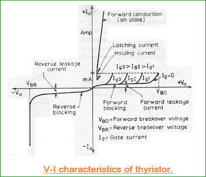

• Reverse Blocking Mode
• Forward Blocking Mode
• Forward Conduction Mode
A thyristor is a four layer 3 junction p-n-p-n semiconductor device consisting of at least three p-n junctions, functioning as an electrical switch for high power operations. It has three basic terminals, namely the anode, cathode and the gate mounted on the semiconductor layers of the device. The symbolic diagram and the basic circuit diagram for determining the characteristics of thyristor is shown in the figure below,
V-I Characteristics of a Thyristor
From the circuit diagram above we can see the anode and cathode are connected to the supply voltage through the load. Another secondary supply Es is applied between the gate and the cathode terminal which supplies for the positive gate current when the switch S is closed.
On giving the supply we get the requiredV-I characteristics of a thyristor show in the figure below for anode to cathode voltage Vaand anode current Ia as we can see from the circuit diagram. A detailed study of the characteristics reveal that the thyristor has three basic modes of operation, namely the reverse blocking mode, forward blocking (off-state) mode and forward conduction (on-state) mode. Which are discussed in great details below, to understand the overall characteristics of a thyristor.
Reverse Blocking Mode of Thyristor
Initially for the reverse blocking mode of the thyristor, the cathode is made positive with respect to anode by supplying voltage E and the gate to cathode supply voltage Es is detached initially by keeping switch S open. For understanding this mode we should look into the fourth quadrant where the thyristor is reverse biased.

Here Junctions J1 and J3 are reverse biased whereas the junction J2 is forward biased. The behavior of the thyristor here is similar to that of two diodes are connected in series with reverse voltage applied across them. As a result only a small leakage electric current of the order of a few μAmps flows. This is the reverse blocking mode or the off-state, of the thyristor. If the reverse voltage is now increased, then at a particular voltage, known as the critical breakdown voltage VBR, an avalanche occurs at J1 and J3 and the reverse electric current increases rapidly. A large electric current associated with VBR gives rise to more losses in the SCR, which results in heating. This may lead to thyristor damage as the junction temperature may exceed its permissible temperature rise. It should, therefore, be ensured that maximum working reverse voltage across a thyristor does not exceed VBR. When reverse voltage applied across a thyristor is less than VBR, the device offers very high impedance in the reverse direction. The SCR in the reverse blocking mode may therefore be treated as open circuit.

Forward Blocking Mode
Now considering the anode is positive with respect to the cathode, with gate kept in open condition. The thyristor is now said to be forward biased as shown the figure below.
As we can see the junctions J1 and J3arenow forward biased but junction J2goes into reverse biased condition. In this particular mode, a small current, called forward leakage electric current is allowed to flow initially as shown in the diagram for characteristics of thyristor. Now, if we keep on increasing the forward biased anode to cathode voltage.
In this particular mode, the thyristor conducts currents from anode to cathode with a very small voltage drop across it. A thyristor is brought from forward blocking mode to forward conduction mode by turning it on by exceeding the forward break over voltage or by applying a gate pulse between gate and cathode. In this mode, thyristor is in on-state and behaves like a closed switch. Voltage drop across thyristor in the on state is of the order of 1 to 2 V depending beyond a certain point, then the reverse biased junction J2 will have an avalanche breakdown at a voltage called forward break over voltage VB0 of the thyristor. But, if we keep the forward voltage less than VBO, we can see from the characteristics of thyristor, that the device offers a high impedance. Thus even here the thyristor operates as an open switch during the forward blocking mode.
Forward Conduction Mode
When the anode to cathode forward voltage is increased, with gate circuit open, the reverse junction J2 will have an avalanche breakdown at forward break over voltage VBO leading to thyristor turn on. Once the thyristor is turned on we can see from the diagram for characteristics of thyristor, that the point M at once shifts toward N and then anywhere between N and K. Here NK represents the forward conduction mode of the thyristor. In this mode of operation, the thyristor conducts maximum electric current with minimum voltage drop, this is known as the forward conduction forward conduction or the turn on mode of the thyristor.
 by
by {kind=link}
{kind=link}
{kind=link}